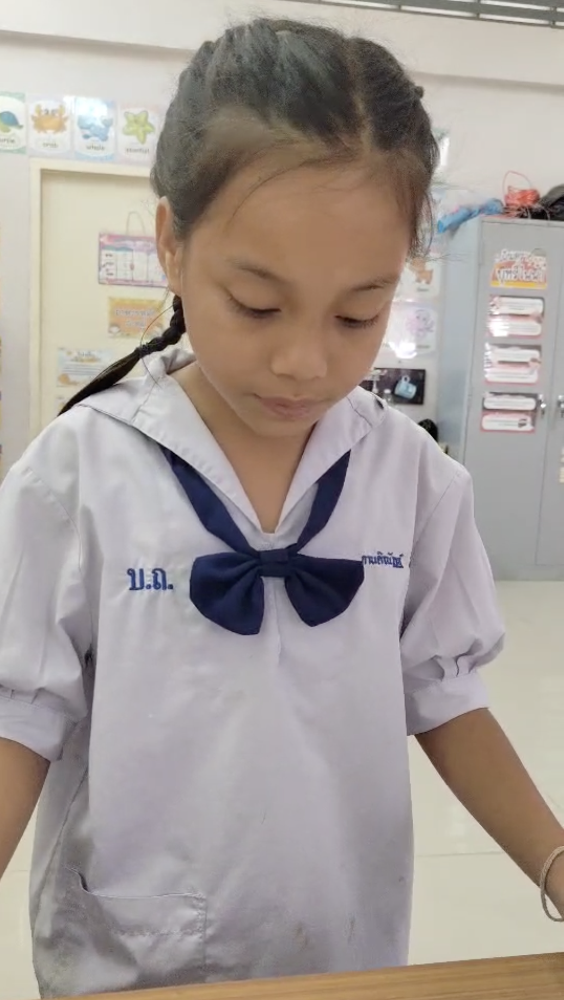

นักเรียนฝึกอ่านคำศัพท์ในชั้นเรียน

บันทึกการเขียนตามคำบอก (Dictation)

การเทียบเสียงภาษาไทย-อังกฤษ

ใช้ภาษาไทยเป็นสะพานช่วยอ่าน

ฝึกซ้ำในบรรยากาศสนุกสนาน


ฝึกแต่งประโยคจากคำศัพท์ที่เรียนรู้ · ฝึกอ่านประโยคที่ตนเองแต่งขึ้น · ฝึกแปลความหมาย



หน้าจอจัดการชุดคำถามบน Blooket

เว็บไซต์คลังคำศัพท์ที่พัฒนาขึ้นเอง


เปิดโอกาสให้คณะกรรมการได้ทดลองกดใช้งานจริง
ขอบคุณคณะกรรมการที่รับฟัง
ยินดีรับฟังข้อเสนอแนะ
นายศิริศักดิ์ จันทร์อ้าย · โรงเรียนบ้านถิ่นสำราญ